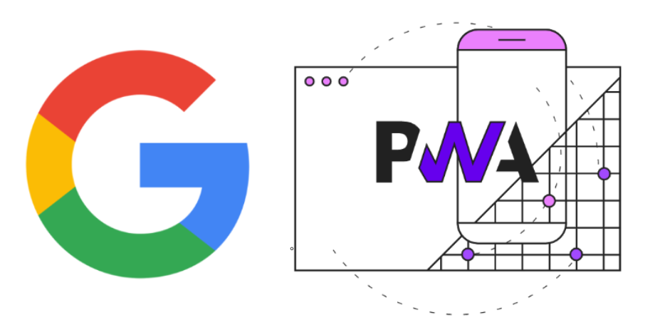
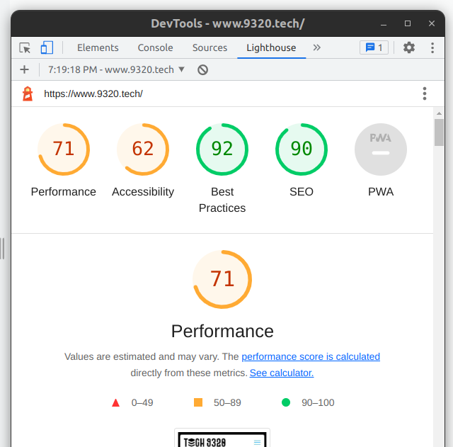

April 18, 2023 by Branislav Stojanović
Progressive Web Applications
For a long time if you were looking for a application that users could access through different devices, you would have to build a separate application for each platform. Primarily, you would need a website that is responsive, adjusted to laptop, desktop, and mobile devices. The rise of mobile devices has led to an increased demand for mobile apps. Mobile apps are expected to have a smooth and native experience and accessibility. In that case, you would probably decide to make one version of the application for each operating system, starting from Android and iOS as the most popular. However, developing and maintaining separate apps for different platforms can be costly and time-consuming. That would require hiring multiple developers, as those who have knowledge of building apps for both Android and iOS are as rare as a needle in a haystack. It would also be hard to keep those apps constantly synchronized as they are built in completely different ways.
That’s where Google comes in, leveraging the latest advances in internet browser technology to provide a unique solution for all platforms. In 2015, they introduced Progressive Web Applications (PWA) with the idea of putting mobile user experiences in the center of interest. Today, there are many examples of widely used applications that are actually Progressive Web apps, some of the most well-known are WhatsApp, Twitter, and Instagram. Bet you would never guessed!

Firstly, let’s define what is PWA exactly. A Progressive Web App is essentially a website that looks and feels like a mobile app. They are mostly built using common web technologies, such as HTML, CSS, and JavaScript. However, they can also be installed on a user’s device and function like a native app. PWAs have made an innovation by bringing all kinds of features that were previously reserved only for native mobile apps.
PWAs are also fast and responsive. This is because they are built using web technologies that are optimized for speed and performance. PWAs are also designed to work well on both desktop and mobile devices, ensuring that users have a consistent experience across all platforms.
Some of the most groundbreaking features that PWAs introduce in the world of the web are:
Offline mode - A feature that was unimaginable for websites. Have you ever noticed that when you enter WhatsApp without an internet connection, the app still works? You can even type messages, and when you get back online, the app will immediately send those messages. This is made possible by scripts called Service Workers, background scripts that are running apart from the context of the main applications.
Background updates and synchronization - Unlike native mobile apps that require constant re-installations or updates, a PWA updates its content in the background (also made possible by Service Workers). This behavior leads to a smoother user experience.
Push notifications - For a long time, users would constantly have to check a website to find out if there is something new, and notifications were only related to native apps. With PWA this feature is brought to the Web! Guess how this is possible? Service workers are the answer again. They can be running in the background even if the application is not open on the user’s phone and push a notification to the mobile phone when some event occurs.
PWAs are platform agnostic - because a PWA essentially runs in the browser environment, it is irrelevant on which operating system the app is running. Developing and maintaining a single app and a single codebase for all devices is effective for reducing costs and saving time.
How can you turn your website into a PWA?
Good news - it’s easier than you think!
Firstly, open the Lighthouse tab in your developer tools, and conduct an audit of your website.

Primarily, you have to ensure that your website is fast and accessible on mobile devices. This is not rocket science, as most websites already satisfy this requirement. The harder part is to make your app accessible without an internet connection. For this challenge, you have to register a service worker that runs in the background and performs tasks like caching, synchronization, and listening for push notifications.
if ('serviceWorker' in navigator) {
navigator.serviceWorker.register('service-worker.js')
.then(function(registration) {
console.log('Service worker registration successful');
})
.catch(function(err) {
console.log('Service worker registration failed: ', err);
});
}
The final step is defining a manifest.json file. This is a configuration file that contains information about your app, such as its name, icons, and start page. The manifest.json file also tells the browser that your website is a PWA.
{
"name": "Tech9320 Web App",
"short_name": "Tech9320",
"start_url": "/index.html",
"display": "standalone",
"background_color": "#ffffff",
"theme_color": "#ffffff",
"icons": [
{
"src": "icon-512.png",
"sizes": "512x512",
"type": "image/png"
}
]
}
When you satisfy these conditions, you will see that the PWA badge in Lighthouse is achieved.
Congratulations, your app is now ready to be downloaded on mobile devices or listed on app stores like Microsoft Store and Google Play Store!
Even though this article presents PWAs as a simple solution for multiple devices, developing a good Progressive Web Application that satisfies all the aforementioned conditions can be a challenging task. Here at Tech9320, developers are highly skilled and experienced in this sort of tasks. Whether you want to turn your website into a PWA or want to build PWA from scratch we assure you that you are on the right place. We can create a PWA that will exceed your expectations as soon as you need it. Feel free to contact us.